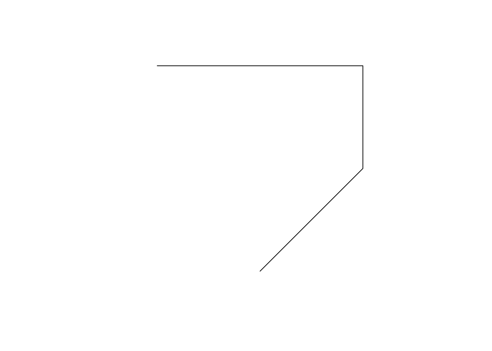
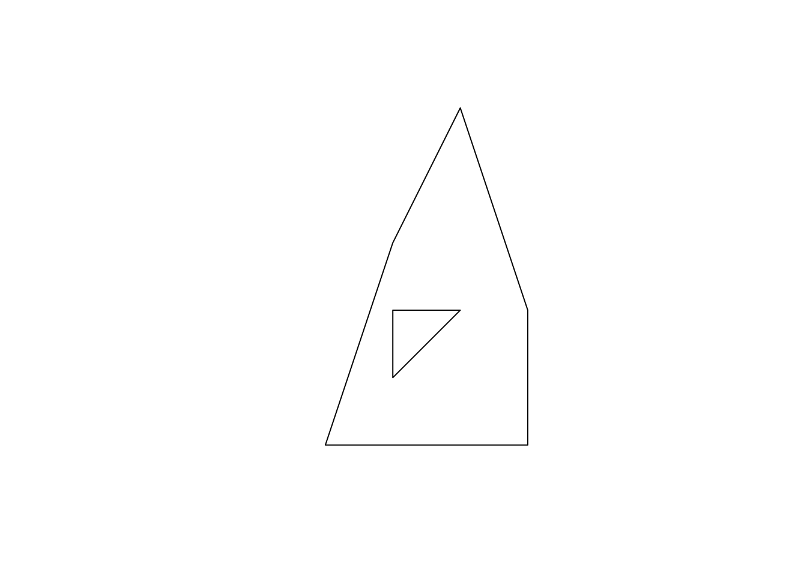
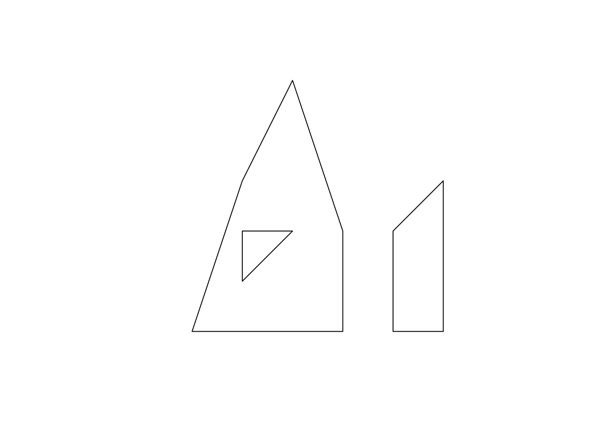

2.3 Here, we learn how different types of sfg are constructed. We also learn how to create sfc and sf from sfg from scratch.38
2.3.1 Simple feature geometry (sfg)
The sf package uses a class of sfg (simple feature geometry) objects to represent a geometry of a single geometric feature (say, a city as a point, a river as a line, county and school district as polygons). There are different types of sfgs. Here are some example feature types that we commonly encounter as an economist39:
POINT: area-less feature that represents a point (e.g., well, city, farmland)LINESTRING: (e.g., a tributary of a river)MULTILINESTRING: (e.g., river with more than one tributary)POLYGON: geometry with a positive area (e.g., county, state, country)MULTIPOLYGON: collection of polygons to represent a single object (e.g., countries with islands: U.S., Japan)
POINT is the simplest geometry type and is represented by a vector of two40 numeric values. An example below shows how a POINT feature can be made from scratch:
The st_point() function creates a POINT object when supplied with a vector of two numeric values. If you check the class of the newly created object,
[1] "XY" "POINT" "sfg" you can see that it’s indeed a POINT object. But, it’s also an sfg object. So, a_point is an sfg object of type POINT.
A LINESTRING objects are represented by a sequence of points:
#--- collection of points in a matrix form ---#
s1 <- rbind(c(2,3),c(3,4),c(3,5),c(1,5))
#--- see what s1 looks like ---#
s1 [,1] [,2]
[1,] 2 3
[2,] 3 4
[3,] 3 5
[4,] 1 5#--- create a "LINESTRING" ---#
a_linestring <- st_linestring(s1)
#--- check the class ---#
class(a_linestring)[1] "XY" "LINESTRING" "sfg" s1 is a matrix where each row represents a point. By applying st_linestring() function to s1, you create a LINESTRING object. Let’s see what the line looks like.

As you can see, each pair of consecutive points in the matrix are connected by a straight line to form a line.
A POLYGON is very similar to LINESTRING in the manner it is represented.
#--- collection of points in a matrix form ---#
p1 <- rbind(c(0,0), c(3,0), c(3,2), c(2,5), c(1,3), c(0,0))
#--- see what s1 looks like ---#
p1 [,1] [,2]
[1,] 0 0
[2,] 3 0
[3,] 3 2
[4,] 2 5
[5,] 1 3
[6,] 0 0 #--- create a "LINESTRING" ---#
a_polygon <- st_polygon(list(p1))
#--- check the class ---#
class(a_polygon)[1] "XY" "POLYGON" "sfg" 
Just like the LINESTRING object we created earlier, a POLYGON is represented by a collection of points. The biggest difference between them is that we need to have some positive area enclosed by lines connecting the points. To do that, you have the the same point for the first and last points to close the loop: here, it’s c(0,0). A POLYGON can have a hole in it. The first matrix of a list becomes the exterior ring, and all the subsequent matrices will be holes within the exterior ring.
#--- a hole within p1 ---#
p2 <- rbind(c(1,1), c(1,2), c(2,2), c(1,1))
#--- create a polygon with hole ---#
a_plygon_with_a_hole <- st_polygon(list(p1,p2))
#--- see what it looks like ---#
plot(a_plygon_with_a_hole)
You can create a MULTIPOLYGON object in a similar manner. The only difference is that you supply a list of lists of matrices, with each inner list representing a polygon. An example below:
#--- second polygon ---#
p3 <- rbind(c(4,0), c(5,0), c(5,3), c(4,2), c(4,0))
#--- create a multipolygon ---#
a_multipolygon <- st_multipolygon(list(list(p1,p2), list(p3)))
#--- see what it looks like ---#
plot(a_multipolygon)
Creating spatial objects from scratch yourself is an unnecessary skill for many of us as economists. But, it is still good to know the underlying structure of the data. Also, occasionally the need arises. For example, I had to construct spatial objects from scratch when I designed on-farm randomized nitrogen trials. In such cases, it is of course necessary to understand how different types of
sfgare constructed, createsfcfrom a collection ofsfgs, and then create ansffrom ansfc.↩You will hardly see the other geometry types: MULTIPOINT and GEOMETRYCOLLECTION. You may see GEOMETRYCOLLECTION after intersecting two spatial objects. You can see here if you are interested in learning what they are.↩
or three to represent a point in the three-dimensional space↩